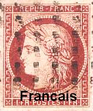

|
| |||||

It has not
only a new name, but also a new
site. Please click on any of the stamps in order to
access this new site, then bookmark it.
We are sorry for any inconvenience.

| 12/04/08. by Victor Manta, Switzerland. |